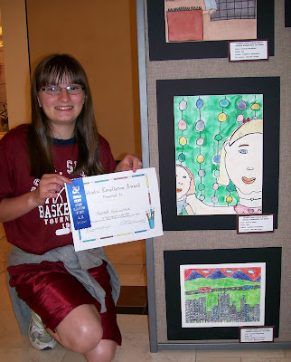

You go girl!
5/3/2009
{kind=link}

On Wednesday evening of this past week, Adelia and I went with our granddaughters, Nicole and Hannah, to Park Meadows Mall where an art exhibit open house took place featuring the artistic talent of several hundred Douglas County Elementary students. Hannah's original piece (bottom) was created with a difficult multi-step "Print Transfer" process, and was one of only three such pieces selected from the works of Trailblazer School students where Hannah is in 6th grade. You see her here displaying her blue ribbon and Artistic Excellence Award Certificate. I don't know who was the proudest at this moment - the artist holding the award certificate or the Grandpa holding the camera!I don't know what professional career is in Hannah's future, but this is the way it begins. Art was one of my favorite classes when I was a student and look where the skill took me ... a career with dummies! (Never mind, maybe that's not the best example. :)
{kind=link}
{kind=link}